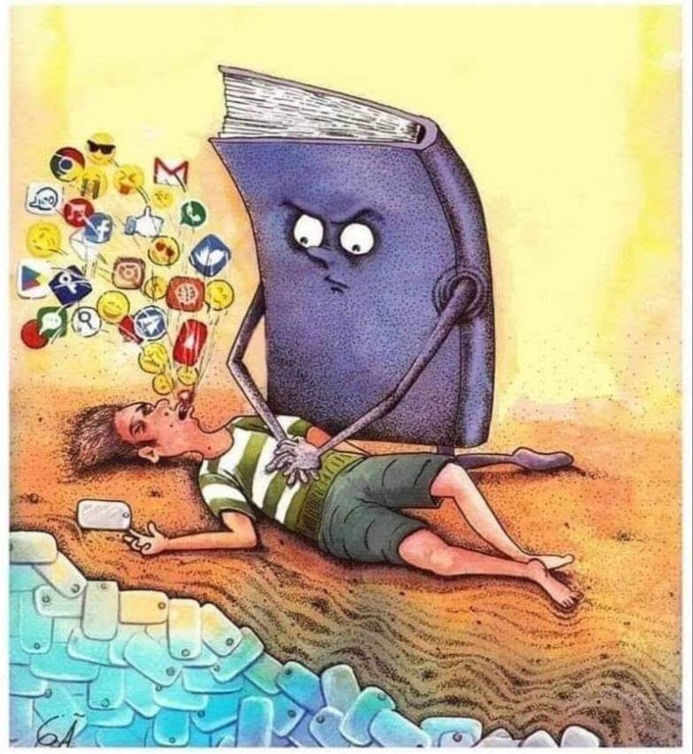

One of the great people said: "Everything passes, but the word remains. States, lords, slaves disappear into oblivion, majestic buildings crumble to dust, trees die, rivers dry up, mountains turn into heaps of stones, everything becomes decay and dust, and the written word remains. The voice of the human soul remains and carries through time." This is one of the greatest wonders of our universe. The creation and significance of the written word, which has survived centuries and different generations, is represented in books. We would know almost nothing about the past if civilization had not invented the book - a smart and faithful assistant of man. Books help to nurture our personality, give answers to thousands of questions, provide material for reflection, offer better intellectual rest and flight of imagination, because they, unlike movies, have no restrictions on special effects. Thanks to books, we get to know ourselves, travel the world, study the history of our ancestors, and plan for the future.
Reading is an effective way to develop mental abilities, imagination, and increase vocabulary. In addition, it helps improve mood, cope with stress, and get rid of depression. A few pages in the morning or evening will change your life for the better.